First Android Game - Part 5
July 1, 2023
This is part 5 of making my first Android Game. If you missed part4, you can find it here
Currently when the player collides with the enemy it gets disabled, goes back to its original position and get reneabled. However this does not sync across the network. So I changed the code to call a RPC function in OnTriggerEnter2D
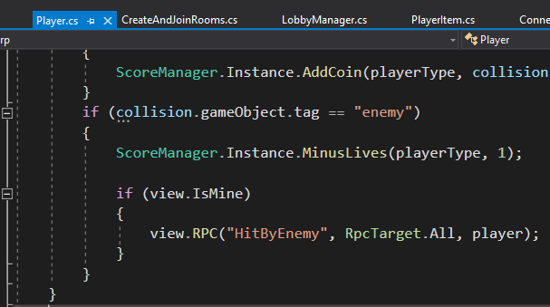
I disabled the explosions code as the explosions are not synced across yet. The RPC function will call a coroutine. The coroutine is doing the same thing as before I synced the collisions across the network. You can also find a video version on youtube here
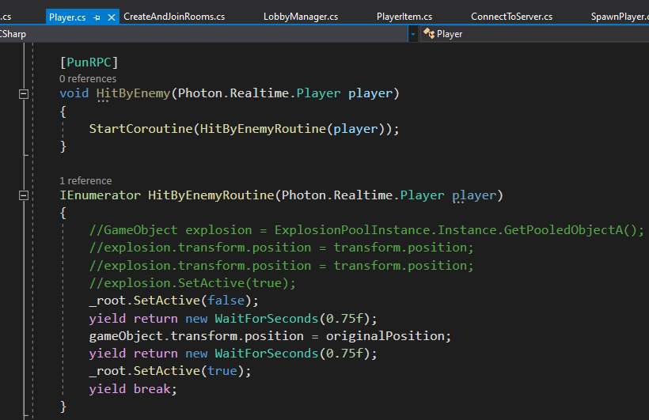
Since the boxcollider2D is attached to the parent of the player, and the gameobject being SetActive(false) is on the child. I needed to disable the boxcollider2D and renable to avoid player getting collided with other gameobjects even though the player is invisible. I created a BoxCollider2D variable. In Awake() I would Get the Component of the BoxCollider2D. Then in the Coroutine I would enable and disable it. You can also find a video version on youtube here
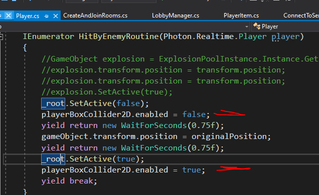
If the user does not enter a name and decides to click on the Connect button in the mainmenu, nothing will happen. This is bad UI design because the user has no feedback. So I added a error text that will get enabled when this edge case occurs. In ConnectToServer.cs, I added a TextMeshProUGUI variable called errorText. This gameobject is disabled in Awake. It is enabled and its text is changed to "Enter name" when the user does not enter a name and selects connect.
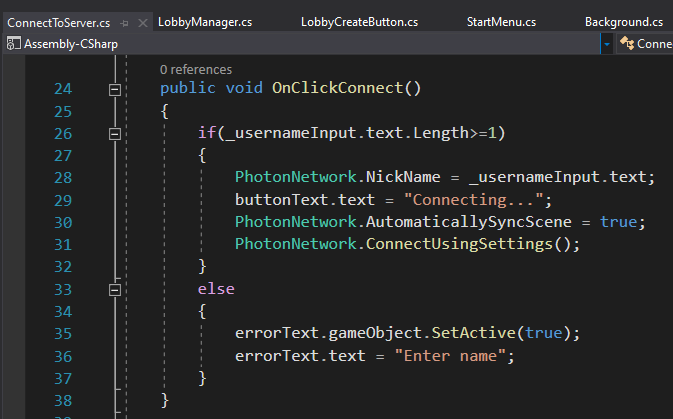
Now the usr will see this error feedback which is a better design.
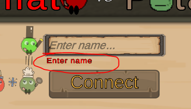
I did the same thing in the Lobby when the user tries to create a room but does not enter a name
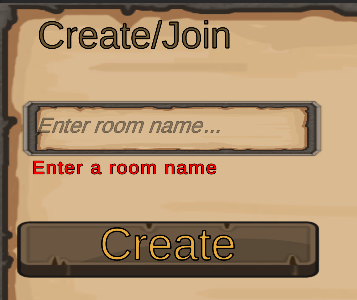
I noticed in the Lobby, when the "Create" button is pressed, there is no feedback given to the user. So I decided to do the same thing as the main menu and changed "Create" to "Creating" when the user presses the button. However, if the user leaves the room and back to the lobby, the "Creating..." text was still there. This is because I am still in the same scene. So I created a LobbyCreateButton.cs that has a string property called ButtonText. This will update the text on the button. When the button is enabled -which occurs when entering the scene or leaving the room - then the button text displays "Create".
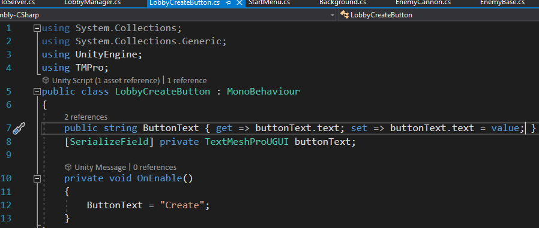
In LobbyManager, instead of referencing the TextMeshProUGUI, I create a LobbyCreateButton variable called createButtonText. This way I can reference the ButtonText property.
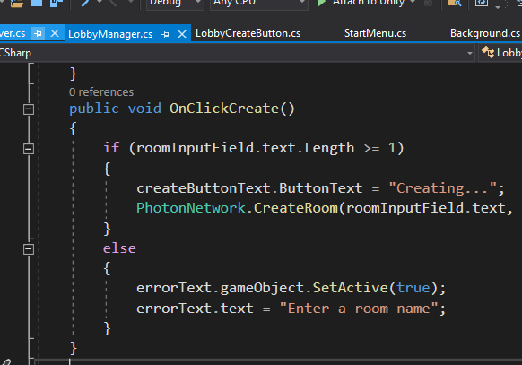
The CreateButton will say "Creating..." or "Create" depending on the scenarios I mentioned above
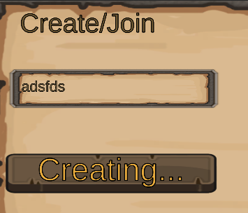
When the user presses the connect button in the main menu, the user can still press the connect button. So I made sure to disable them to prevent the user from pressing connect multiple times which can result in this warning
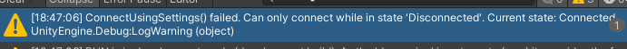
The disabled state of the button looks like this
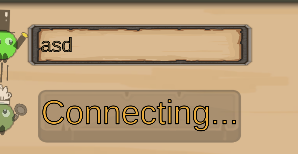
Simlarily, when the user is trying to create a room and clicks create multiple times, this error will occur
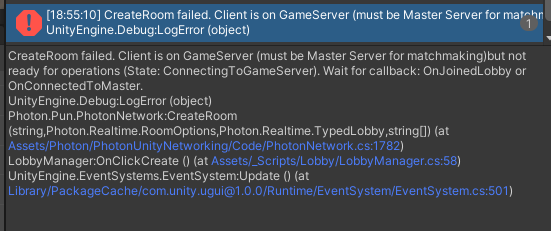
So in LobbyCreateButton.cs, I added a boolean property called PressButton. This let's me set when the button is interactable
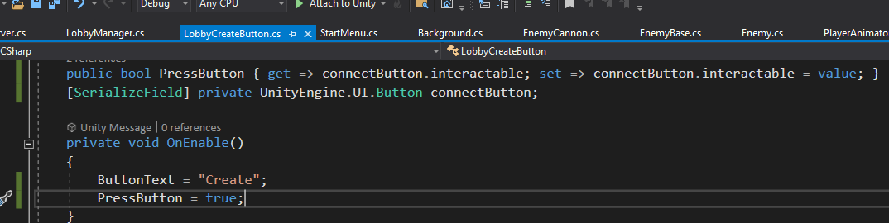
The disabled state of the button looks like this. You can see the video version here
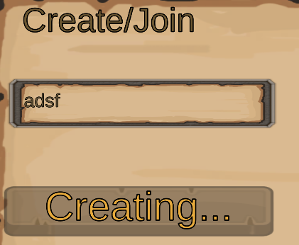
Updating the score requires syncing across the network as well. The Asteroid game example from the PUN2 asset had its own score system. So I took a look at that. First I used PlayerOverViewPanel.cs as my example. I created a TestScorePanel.cs script. In the Awake, I create a dictionary that will store the Photon.Realtime.Player ActorNumber as the key and the Score gameobjects as the value. This way I can search for which player's score I want to modify. I would loop through the PlayerList which will contain all the players that had entered the lobby. For each player in the list, I would spawn the Score gameobject. In this case, the ScoreGameobject would be childed to a gameobject that has the horizontal layout group so the score prefab won't overlap. I would then set the text to the player's name, score and lives. These are the initial values at the start of the game
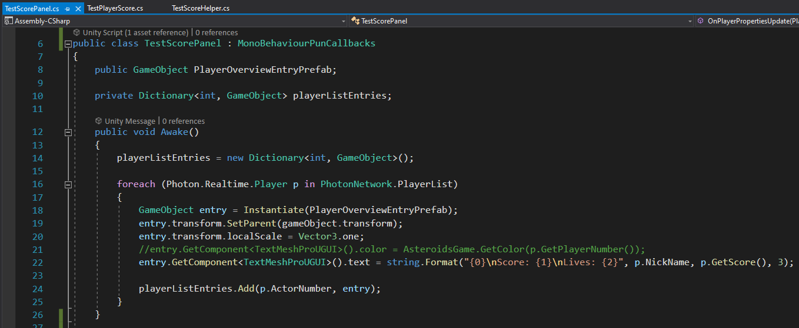
OnPlayerPropertiesUpdate would be needed because when SetCustomProperties is called, it will call OnPlayerPropertiesUpdate. In this function I would look for my player in the dictionary and get the score gameobject. I would pass update my score and lives. The score would the most updated because of GetScore().
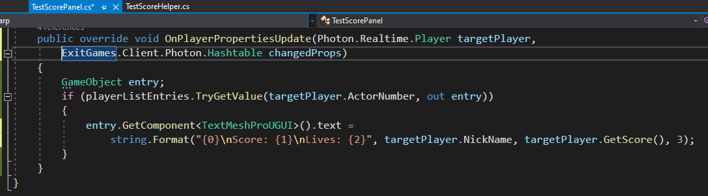
Then there is the PunPlayerScores.cs. This would be the script example I used for TestPlayerScore.cs. The first function would be SetScore. Note that it passes in this Photon.Realtime.Player. This means I won't need to pass in the Photon.Realtime.Player. The script would need to be static in this case. I store "score" in the hashtable score variable. I would then update this player's custom properties by calling SetCustomProperties. This would automatically call OnPlayerPropertiesUpdate() from TestScorePanel.cs
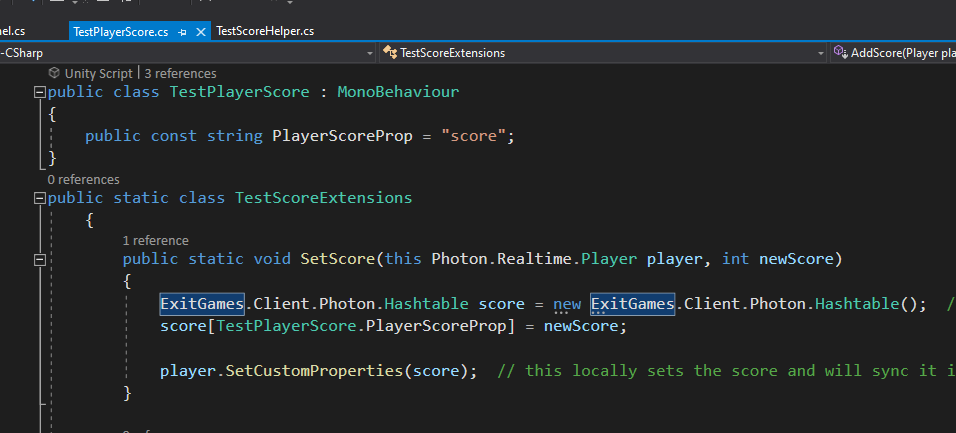
Then there AddScore(). Similar to SetScore but it would add to the current score
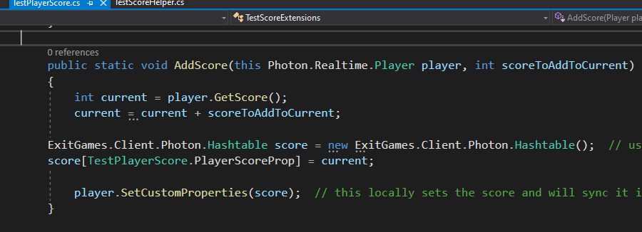
Last is GetScore().This would return this player's score which is stored in the custom properties
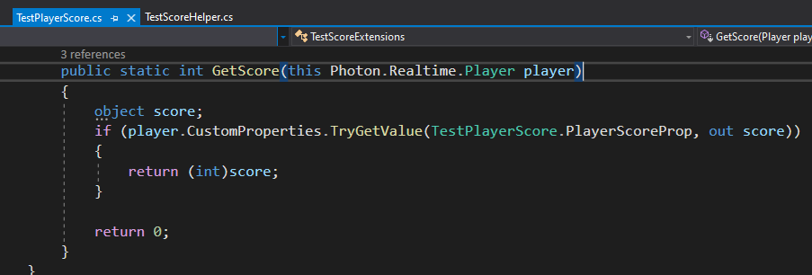
Last sample script I references was ScoreHelper.cs. I created a TestScoreHelper.cs. In Update(), I would say if the mouse is clicked which is equivalent to if the screen is tapped, check if local player exists then set the score.
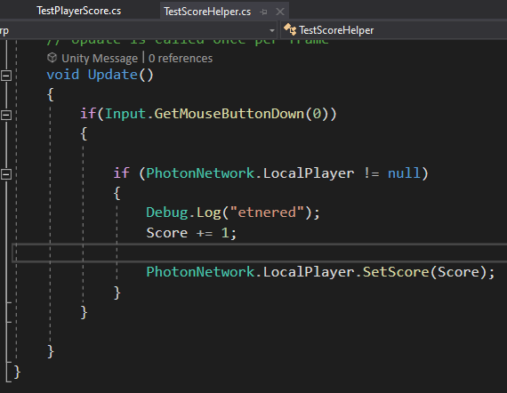
I created a Test Scene. It contains a TestPanel gameobject. This has an Image component, TestScorePanel(Script) component and a Horizontal Layout group component. The ScoreHelper gameobject has the TestScoreHelper(Script) component. The TestPlayerScore.cs is not in the scene, and can be referenced because it is static
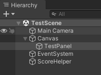
I made a build with MainMenu, Lobby and TestScene. And the Score was being updated and synced!
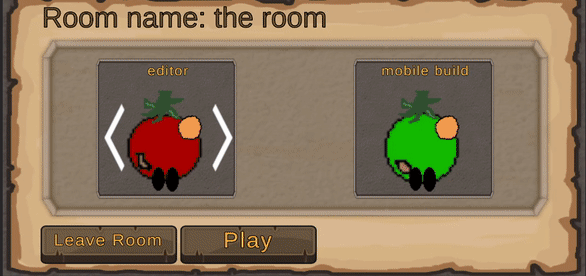
Now I had to move over the same logic to the actual game. I want to sync up the score and coins. Since a lot of code for the scores were based on ScoreManager.Instance - this would not work with this logic. So I had to comment those out. I first created a PlayerTextInformation.cs. This is so I have access to the scores and coins text. Unlike the test I did, the text was the gameobject itself so I could GetComponent TextMeshProUGUI. In this case, I would GetComponent PlayerTextInformation to access the Properties Coin or Score
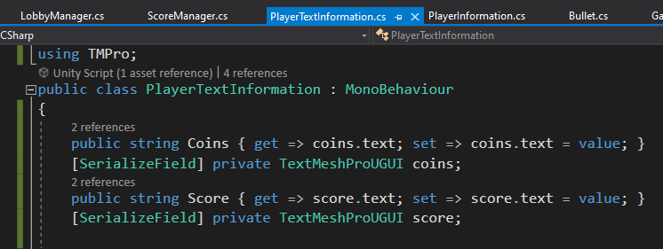
This script is attached to PlayerTextInformation prefab which will contain the players name, lives, coin count and score.
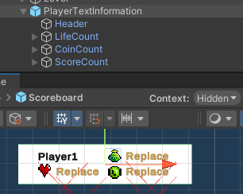
Using TestPlayerScore.cs as the example, I transferred the same logic over to PlayerInformation.cs and included a const string for coin and score
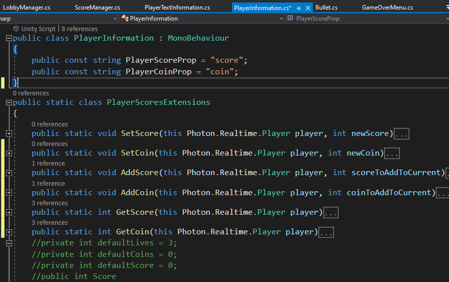
On the Scoreboard prefab. The player's information has been removed, because the PlayerTextInformation will be spawned on to the "UI board Small parchment" which contains a horizontal layout group. The Scoreboard prefab has the ScoreManager(Script) component
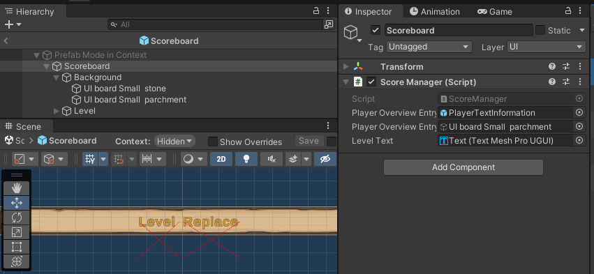
The ScoreManager.cs is based on TestScorePanel.cs. The difference is instead of GetComponent TextMeshProUGUI to get the Score and Coins, I GetCopmonent PlayerTextInformation and access the Properties Coins and Score
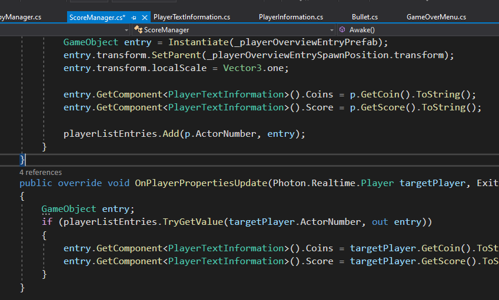
Anywhere I was adding score or coins I would change it to the new GetCoin() and GetScore(). This includes the bullet hitting the enemy to add score
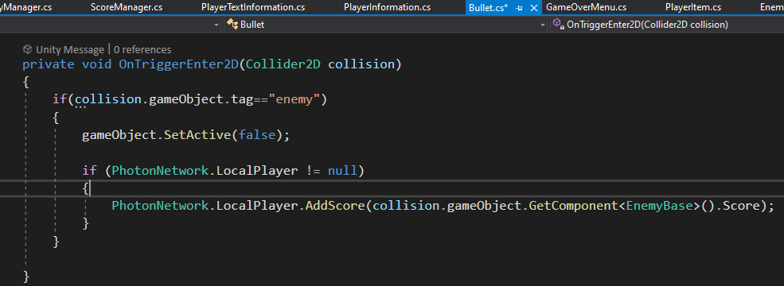
As well as player collecting coins
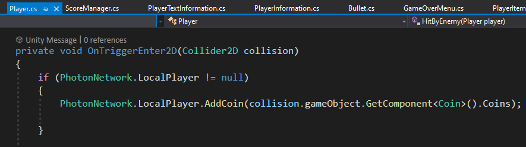
I tested to see if this working by testing with the editor and on a mobile build. The score appears to be syncing. The coins however was being incremented for both players even if only one player is collecting the coins. Reminder that because of the new photon code, all the codes for when to spawn the enemies, subtracting lives are commented out. The player's names are not implemented yet and the bullets are not synced across the network yet
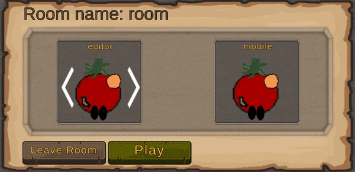
I was getting an error when I attempt to GetCoins()
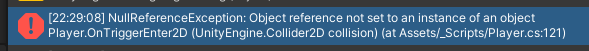
Recent blogs
See all blogs